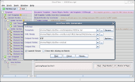
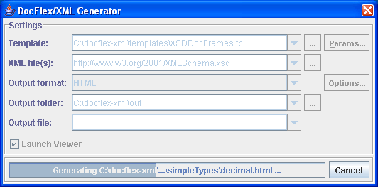
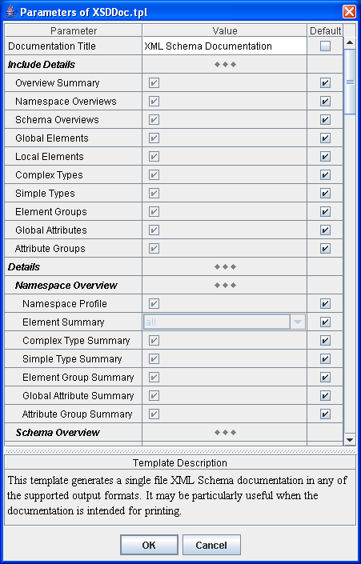
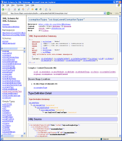
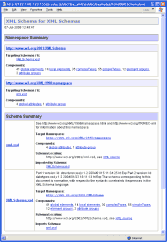
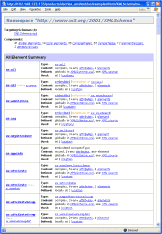

DocFlex/XML (Kit) - XSDDoc - XML Schema Documentation Generator
- Introduction
- Template-driven Documentation Generation
- Generator GUI
- Generated Documentation
- Processing Capabilities
- Documentation Features
1. Introduction
DocFlex/XML XSDDoc is a high quality documentation generator
for any W3C XML Schema
able to produce both multi-framed Javadoc-like HTML and
printable RTF documentation.
As XML becomes the universal medium for storing and transferring various computer
information and more XML applications appear, the XML schemas serve those
rails on which such applications are being developed and moving on.
Now, XML schemas are growing ever more complicated, may consist of a lot of modules
designed by different software architects. Meanwhile,
W3C XML Schema language
is complicated and verbose and more suitable for processing by machines
rather than for human readers.
All of this makes new XML schemas nearly impossible to understand without
a special documentation provided by their authors or, perhaps, generated by
a special tool from the schemas themselves.
DocFlex/XML XSDDoc is one of such tools. It will allow you to decipher any XML schema
and represent it in the form of a clear-cut documentation,
which will help you to understand what that schema actually describes.
2. Template-driven Documentation Generation
The XML Schema Documentation Generator is the first big template application of
DocFlex/XML (see also
DocFlex/XML | Roadmap),
which is intended both to demonstrate the full capabilities of this technology
and to deliver a highly valuable software tool.
The generator is implemented entirely as a set of
DocFlex/XML templates
(called "XSDDoc" templates) using only generic capabilities
of raw XML file processing offered by this tool.
No Java code has been written anywhere specifically for this purpose!
Neither any other XML processing technologies (e.g. XSL Transformations) are used anywhere in background!
"XSDDoc" Templates
The template set includes two main templates, which effectively
provide two different documentation generators:
Besides the main templates, there are many other templates (called subtemplates) that are used internally.
Those subtemplates work as procedures invoked from the both main templates as well as from themselves.
The entire "XSDDoc" template set consists of 63 templates.
Template Designer
Using a visual graphic
Template Designer provided with the full edition
of DocFlex/XML,
you can customize all "XSDDoc" templates as you need.
In particular, you can easily translate any messages specified in the templates from English
into your native language, insert your company logotype, change documentation design and content,
extend with your own functionality and so on.

This picture shows the XSDDoc.tpl template open with the
Template Designer
under Linux and the generator dialog
invoked to generate with this template a sample XML schema documentation in RTF format
(click to see the full-size screenshot).
3. Generator GUI
Generator Dialog
-
Besides the possibility of running the generator from the
command line and adjusting everything
using command line options,
DocFlex/XML also provides a little GUI
that allows specifying all the setting in a more user-friendly way.
When no -nodialog option is specified
on the command line, the generator launches automatically the following Generator Dialog:

In the Generator Dialog, you can:
- Select the template (which determines what documentation you are going to generate).
- Specify the template parameters.
- Choose the source XML files (in the case of XSDDoc, this will be XSD files).
- Select the documentation output format.
- Specify the output format options
(i.e. some generator settings special for the selected output format).
- Choose the destination folder and the main output file name for the generated documentation.
- Run the generator.
- View the generation progress.
Once you click the "Run" button, the dialog transforms itself to show
the progress of the generation:

Parameter Inspector
-
Since all the content and formatting of the generated documentation are programmed
entirely within templates, the numerous options and switches, which normally control such things in
an ordinary doc-generator, now simply become the template parameters.
"XSDDoc" templates provide plenty of parameters that allow to vary the generated
XML Schema documentation within a vast range of included details,
starting from the most comprehensive documentation containing every feature possible up to
just summaries and overviews of certain special things.
Besides the possibility of setting the template parameters directly on the
command line using
-p option,
the generator GUI provides an immensely convenient way of specifying any of them using
the Parameter Inspector dialog (invoked from the Generator dialog).
Here, you can:
- Edit each parameter according to its type.
- Switch on/off whether the default parameter value specified in the template must be used.
- View the HTML description of the parameter, which is also obtained from the template.
The following screenshot shows the Parameter Inspector dialog of XSDDoc.tpl
template. Click on the image to see the full list of the parameters contained in this dialog:

4. Genereated Documentation
The "XSDDoc" set of templates allow
to generated the following types of documentation:
HTML documentation
-
Generating a single multi-framed HTML (Javadoc-like) documentation by any number of source
W3C XML Schema definition (XSD) files.
The entire HTML documentation is interconnected with a common network of hyperlinks.
For instance, the documentation of a component declared in one schema will be hyperlinked from any other
locations where that component is used or referred to in any other documented schemas.
The following screenshot shows such a documentation generated by 'XMLSchema.xsd'
using XSDDocFrames.tpl template (click on the picture to see the live HTML):

'XMLSchema.xsd' is the "XML Schema for XML Schemas",
the basic XML Schema that defines
the W3C XML Schema language itself
(see http://www.w3.org/2001/XMLSchema.xsd).
RTF documentation
-
Generating by any number of XSD files a splendid quality single-file RTF documentation
ready for printing and friendly to open with MS Word under Windows
or OpenOffice.org Writer under Linux.
Similarly to the framed HTML, the RTF documentation
is also entirely interconnected with hyperlinks. However, in addition to the interactive hyperlinks,
many of them are duplicated with page number references, which may greatly help using/navigating
such a documentation when it is printed out on the paper.
The following screenshots show pages of the RTF documentation generated by
the same 'XMLSchema.xsd' schema, however, now using XSDDoc.tpl template
(click on the picture to see the real size page preview):
See also
Examples | RTF Documentation
for more details about that demo RTF and a lot more screenshots!
5. Processing Capabilities
Schema Processing
-
Processing any number of source
XML Schema documents (XSD files)
and generating by them a coherent documentation with the separate tracking of components
both for each target namespace and every single schema as well as documenting
any interactions between them followed up with a single network of hyperlinks.
-
Loading the source XML schema files both by local pathnames and
by URLs directly from Internet.
-
Automatic loading and processing of any schemas specified within other schemas
using
<xs:import>
and <xs:include>
elements and adding them for documenting (with possibility to download the imported schemas
directly from Internet by the URLs specified in those elements).
-
The
<xs:redefine>
elements are processed in the following way.
The XML schema specified in such an element is loaded into memory and then altered so that
every component being redefined within the
<xs:redefine>
element is renamed within the loaded schema by adding the '$ORIGINAL' suffix to the component's name.
All references to the original components within the
<xs:redefine>
element are also renamed. Further, the schema is processed the same way as in the case of
<xs:include>
element.
As a result, not only all the new semantics of the redefined components gets fully supported
and documented but also the original components are preserved and documented as well.
For example, see
"XML Schemas for XHTML 1.1",
where
<xs:redefine>
elements are used in several locations.
Namespace Processing
-
Showing the original namespace prefixes defined and used in the source XSD files
within the names of the schema components appearing in the documentation.
This makes the generated documentation a lot more convenient and easy to read!
Although, it sounds like nothing special, that feature appears to be so difficult to support
that we have never seen it in any other existing XML schema doc-generators so far!
Indeed, one needs to have some special technology to do that, because most of the standard
means of processing XML (like XSL Transformations, for instance) completely hide
the original namespace prefixes as the local thing of XML files.
It may be irrelevant for most purposes, of course, but not for an XML documentation tool!
-
Optional inclusion in the generated documentation the Namespace Binding Report,
which allows to quickly find for any namespace prefix used in the source XSD documents
the namespace URI associated with it and the location of where that namespace
binding is specified. (Click
here
to see an example of how it looks).
Annotation Processing
-
Using
<xs:annotation>
elements, you can add descriptions both to your XML schema as a whole and, separately, to any components defined in it.
(Specifically, the description text must be enclosed in
<xs:documentation>
element, which, in turn, is nested in the
<xs:annotation>
element).
Click on the following link to see the documentation of
<xs:annotation>
element generated by its definition in the
"XML Schema for XML Schemas",
the basic XML schema defining the W3C XML Schema language itself.
|
Which <xs:annotation> elements are processed?
As you may notice, the
<xs:annotation>
elements can be inserted in almost any other XML Schema elements.
However, currently, the XSDDoc templates process only the
<xs:annotation>
elements specified in the following locations:
-
In the definition of the entire XML schema. Here,
the
<xs:annotation>
may appear as one or multiple children of the element:
In that case, the annotation text will get into the "Annotation" section of the Schema Overview
(e.g. see also below).
When multiple
<xs:annotation>
elements are used, each of them will produce a separate "Annotation" sub-section. For example, see
"XMLSchema.xsd"
schema overview.
-
In definitions of global components. Here, the
<xs:annotation>
element may be a child of one of the XML Schema elements:
This will be processed into an "Annotation" section of the Component Documentation.
-
In definitions of embedded Complex/Simple Types within element/attribute definitions.
Here, the
<xs:annotation>
element may be a child of one of the locally used XML Schema elements:
Such an <xs:annotation>
processed into the "Annotation" section of the Embedded Type Detail.
-
In definitions of local elements or within references to global elements.
Here, the
<xs:annotation>
is a child of one of the local XML Schema elements:
This annotation will be placed in the corresponding item of the
Content Element Detail of the parent component.
-
In definitions of local attributes or within references to global attributes.
Here, the
<xs:annotation>
is a child of the locally used XML Schema element:
This annotation will be placed in the corresponding item of the
Attribute Detail of the parent component.
-
In facet definitions.
Here, the
<xs:annotation>
may be a child of one of the XML Schema facet elements:
This annotation will be placed in the Facet Documentation.
|
-
Rendering line breaks.
For details, see
FAQ | How to enable/disable interpreting line breaks in my comments?
-
Support for XHTML.
Click on the screenshots to see demo:
For details, see
FAQ | How to format my comments using XHTML?
-
Inserting images.
Please, see
FAQ | How to format my comments using XHTML? |
How to insert images?
6. Documentation Features
Main Blocks
-
The Overview Summary block starts the documentation (in the case of a framed
HTML documentation,
this is a separate document, which is loaded in the details frame the first).
It consists of the following sections:
- Namespace Summary
- Schema Summary
Here is how a typical Overview Summary looks (click on the picture):

-
The Namespace Overview is generated for each documented namespace.
It may consist of the following sections:
- The namespace profile
- The summaries of components defined in this namespace:
- All / Global / Local Elements
- Global Complex / Simple Types
- Global Element / Attribute Groups
- Global Attributes
Precisely, which of those sections are included can be specified using
template parameters.
Click on the screenshot to see a Namespace Overview sample:

-
The Schema Overview block is generated for each documented schema (XSD file).
It may include the following sections:
- The schema profile
- The schema annotation
- The summaries of components defined in this schema:
- All / Global / Local Elements
- Global Complex / Simple Types
- Global Element / Attribute Groups
- Global Attributes
- The XML source of the schema
The inclusion of the sections can be controlled using template parameters.
Click on the following screenshot to see a sample of the complete Schema Overview:
The Component Documentation blocks are generated for all major XML schema components:
- Elements (both global ones and those defined locally)
- Global Complex Types
- Global Simple Types
- Global Element Groups
- Global Attributes
- Global Attribute Groups
Each Component Documentation may include the following sections (depending on the component type
shown in the last column):
Precisely, which sections are included for a particular component type can be controlled
using template parameters.
The following screenshots show samples of the Element and Simple Type Documentation,
where all those sections are employed (click to view the HTML):
Documenting Local Elements
-
This XML Schema doc-generator provides a unique capability to document all local elements
defined in a schema (not found in any other product!).
|
Here are more details
The local elements are the element components defined within complex types (global or
embedded in other elements) and within element groups (which are separate schema components
that define the whole batches of elements arranged in certain complex models).
The problem with local elements is that with their introduction there is no
direct relation any more between an element name and its type for the whole XML document.
For example, when in an XML document you meet, for instance, an element
<record>,
you need to look into the context where that element appears, because within the same XML document,
there may be quite another <record>
element describing absolutely different thing (e.g. the first one may be related
to a book-keeping record whereas another one may be saying something about a music song,
and the whole document is something like a sales log of a music store).
For all that trouble with their interpretation, local elements happen to be very much convenient and useful.
Now, many XML schemas are designed so that the global elements are never used in them at all.
Instead, the schema authors prefer to define only global data types and, then, refer to them from the local
element definitions, occasionally modifying some global type within the types embedded
in local elements.
All of this does not eliminate the need to know what each local element describes and to have
some documentation about it. That's especially true, because when you look at a particular XML document
described by a schema, there is no type information shown nearby each element -- only element tags and that's all.
The XSDDoc templates are designed to handle this problem in the following way:
-
Those local elements that share the same name, and whose type is determined
by 'type' attribute referring to the same global simple or complex type, are considered as a single
quasi-global element.
Unlike ordinary global elements whose names are unique for the whole namespace, each quasi-global element
is unique only by its name/type combination. Almost anything that can be said about each local element
with equal name/type combination is all the same and, therefore, may be referred and documented
as a single unit.
Actually, such an approach may be even more interesting, because the same name/type combination
for a schema element is normally associated with the same thing from the real world.
When you try to understand a particular XML schema, tracking something associated
with different local elements scattered across the whole schema may be difficult.
Having a single documentation for this may quickly reveal a lot more details.
Each quasi-global element is documented separately and is referred to from every location
of the corresponding local elements. In various lists and summaries within the documentation
the quasi-global elements appear with their names extended with their types.
For example:
xs:element (type xs:narrowMaxMin)
-
The local elements with the embedded type definition are truly local ones.
The presence of the embedded type means that such an element is associated with something
relevant to only this particular local context.
Each local element with embedded type is documented separately and referred to by its name
followed by the name of another element, which may contain it.
In the case, the element may be included in multiple other elements (e.g. when it was defined
within an element group that is reused in different locations) its name is extended with more
details about the embedded type, although that situation is rare.
For example, an expression
xs:all (within xs:group)
represents the element <xs:all>, whose type is embedded,
and which may appear in an XML document only as a child of
<xs:group> element.
|
XML Representation Summary
-
The XML Representation Summary generated for each schema component
shows a schematic representation of all possible XML constructions this component describes
as well as how those constructions may look in an XML file.
In particular, this includes:
- A list of possible attributes an XML element may have.
- The type and possible values for each attribute.
- The element content representation, which has two different forms for
simple and complex content models.
- The element simple content is represented in the form of a data type and possible values
the element may enclose.
- The element complex content is represented with the use of extended Kleene operators
(see below).
Here is how such a representation may look:

-
The element Complex Content Models, which represent all possible combinations of children of an element,
are shown within XML Representation Summary of certain elements (see 'Content' field on the picture above),
complex types and element groups.
Complex Content Models are represented using Kleene operators (those used in
DTD) extended with
two more operators to cover all situations allowed by W3C XML Schemas. The following table shows
all operators used in Complex Content Model representations:
| Operator |
Description |
| , |
sequence |
| | |
choice |
| () |
grouping |
| ? |
0 or 1 times |
| + |
1 or more times |
| * |
0 or more times |
|
Extended operators
|
| × |
The idea of this operator can be expressed by formula:
a × b = ((a, b) | (b, a))
This operator is used in two situations:
-
To represent an unordered content model (which is the one defined with <xs:all> compositor)
-
To represent a mixed content model (i.e. when any text is allowed before, between and after elements).
For example, a content model for marked text used in messages at some programming forum web-sites
(that is, a text with allowed italic, bold and code markup) may be represented as the following:
{text} × (i? | b? | code?)*
|
| [n1, n2] |
A general cardinality operator
(n1 can be 0 or any number; n2 is any number or *).
This operator is used in those rare situations when Kleene cardinality operators (?, +, *)
are not enough.
For example:
A+
is the same as
A[1,*]
|
Related Component Lists
Type Documentation
XML Source Documentation
-
Reproducing the original XML source for the whole XML schema document.
-
Reproducing a fragment of the XML source defining each particular schema component
and inclusion it in the component's documentation. For example, as on this screenshot:

-
Highlighting with separate colors the XML markup, tags, attribute names and values,
XML comments and other XML source declarations.
-
Generating direct hyperlinks from the reproduced XML source to the documentation
of the referenced schema components as well as to external Internet pages
from the URL values of attributes.
See Examples | HTML Documentation.
Copyright© 2003-2006 Filigris Works. Leonid Rudy Softwareprodukte. All rights reserved.
To contact us, please visit
www.filigris.com or e-mail to: contact@filigris.com